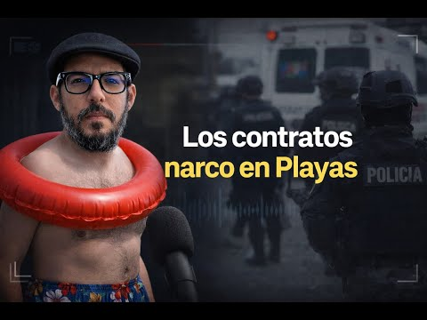
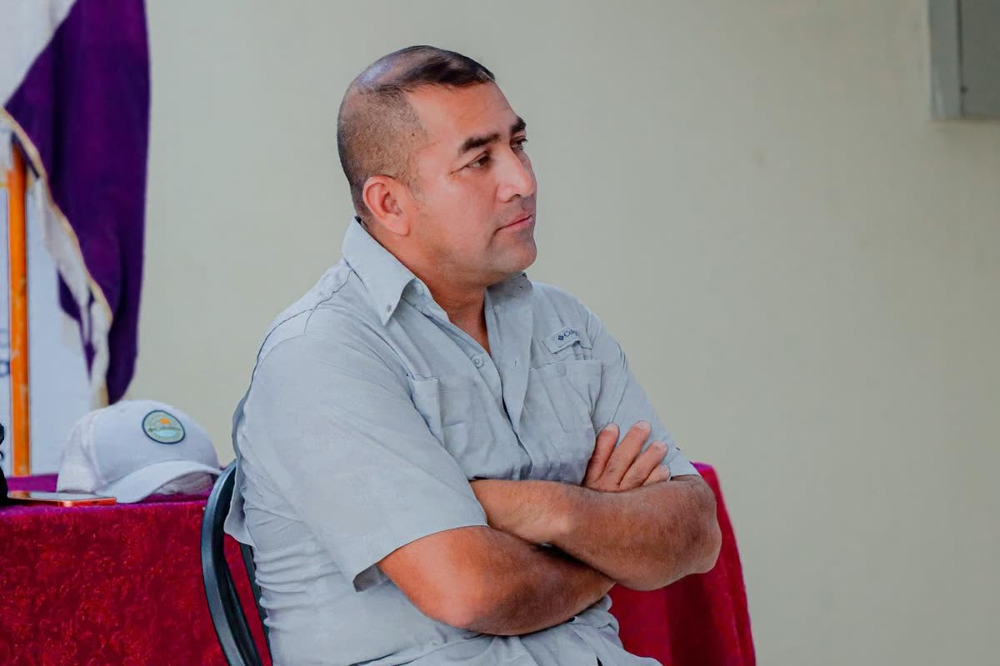
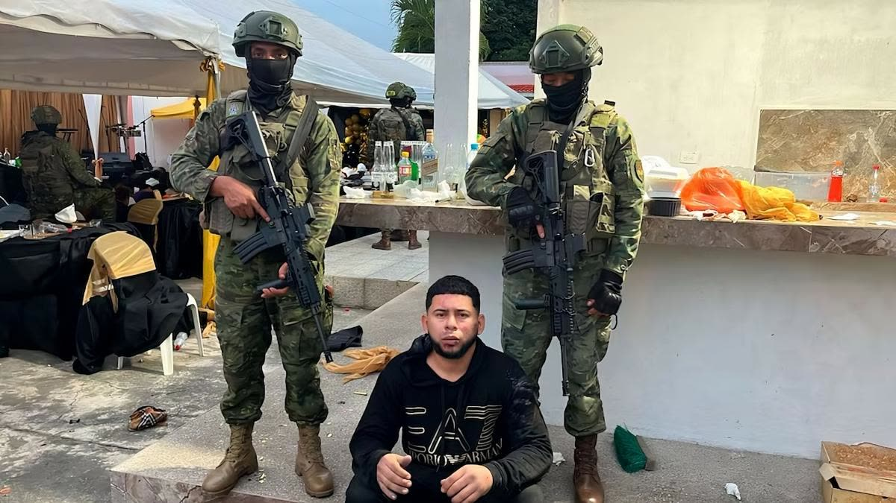
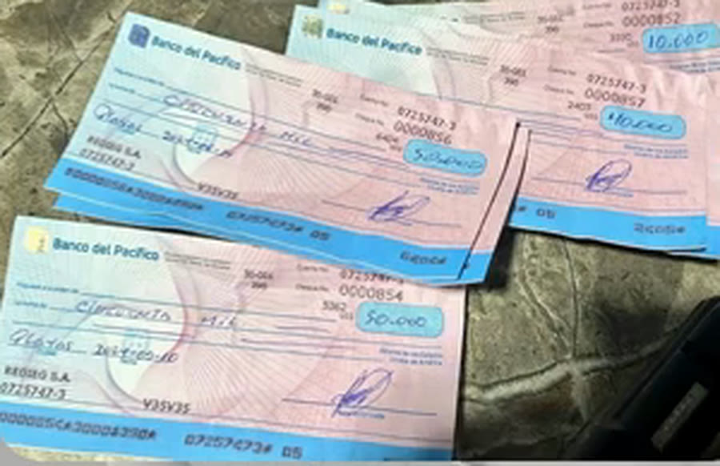
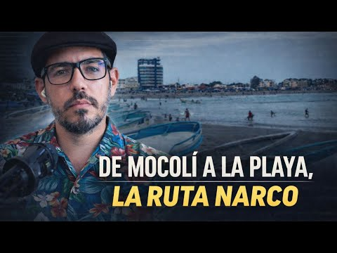

19 ene 2026 · El vínculo narco de Playas, contado por Boscán
En enero de 2026, tirando del hilo del caso Mocolí, Andersson Boscán y Mónica Velásquez revisaron en un fin de semana los contratos del Municipio de Playas. Encontraron que el alcalde Gabriel Balladares le había entregado millones a la familia de su pareja, y que el padrastro de ella era socio de alias Boris, el zar de la droga de Los Choneros, en cuyo poder aparecieron cheques de esa misma empresa contratista. Nueve meses después, la madrugada del 30 de octubre, la Fiscalía allanó la casa del alcalde.

Ilustración: el contrato de enero de 2024 dibujado como cheque. El sello marca el allanamiento del 30 de octubre de 2026.
La noche del 7 de enero de 2026 un grupo armado mató a tres hombres en una cancha de Mocolí, en Samborondón; uno de ellos era alias Marino, cabecilla de Los Lagartos. En los días siguientes, Boscán y La Moni siguieron el rastro del círculo de jóvenes que rodeaba al narcotraficante. Uno de los nombres que les llegó fue el de Eduardo Freire, novio de la creadora de contenido Wendy Landa.
Freire tenía una empresa creada en 2023 con 800 dólares de capital. Según la nota de prensa que Boscán leyó al aire, esa empresa se ganó un contrato de USD 607.301 en Hidroplayas, la empresa pública de agua del municipio de Playas: fue el único oferente y lo firmó cuatro días después. A Boscán el nombre de Hidroplayas le hizo clic: años antes, en esa misma empresa municipal, había ganado un contrato alias Marino, cuando ya era uno de los más buscados del país.
Si un narcotraficante tiene un contrato en una empresa pública de Playas, si un muchacho de veintipocos tiene un contrato de medio palo ganado en cuatro días sin que nadie compita contra él, a mí me hacía sentido que miráramos Playas.
Andersson Boscán, en el programa del 19 de enero de 2026
Boscán y La Moni dedicaron el fin de semana del 17 y 18 de enero a revisar Playas, con ayuda de gente del cantón que les hizo llegar información. Antes de llegar al alcalde aparecieron detalles raros: un contrato a una empresa que, hasta poco antes, era propiedad de un empleado del municipio, y otro de unos USD 300.000 en kits de alimentos para familias necesitadas cuya administradora renunció a mitad del contrato y tuvo que ser reemplazada. La mañana del lunes 19 contaron lo que habían encontrado.


AlcaldeGilmar Gabriel Balladares Espinoza ganó la alcaldía de General Villamil Playas el 5 de febrero de 2023 con el movimiento Pachakutik y asumió el 14 de mayo de ese año, para el período 2023-2027. Playas está a unos cuarenta minutos de Guayaquil y muy cerca del puerto de Posorja.
El primer contrato que les saltó a la vista fue el alquiler de equipo caminero para la reconformación vial de varios sectores del cantón. A la puja llegaron dos empresas, la Compañía de Transporte Edison Moreira y Max Supply S.A., con precios casi iguales. Ganó Max Supply, por unos USD 340.000, un contrato grande para un municipio del tamaño de Playas. Boscán contó al aire que ese proceso se cayó después.
El dueño de Max Supply es Luis Alexander García Holguín. Para entender quién era, Boscán y La Moni reconstruyeron el entorno del alcalde. Según el Registro Civil, Balladares es soltero, pero convive con María Magdalena Barberán Zambrano, a quien presenta como su esposa. El padrastro de ella es Sandro Miguel Holguín Cedeño, y García Holguín es sobrino de Holguín. Es decir, el contrato fue para el sobrino del suegro del alcalde, en la práctica.
Firma los contratos. Soltero según el Registro Civil.
El alcalde la presenta como su esposa; no están casados.
Supervisor municipal desde octubre de 2023. Socio de alias Boris en Construyendoplayas y dueño de Redieg S.A.
Socio fundador de Construyendoplayas. Capturado el 12 de junio de 2024; tras su captura aparecieron cheques de Redieg.
Dueño de Max Supply S.A.
Reconstrucción de Boscán y La Moni con datos del Registro Civil, la Superintendencia de Compañías y el Sercop, presentada en su programa del 19 de enero de 2026. Montos de Redieg según Extra y Primicias. Ninguno de los lazos familiares es un parentesco legal.
Ninguno de esos lazos es un parentesco legal: el alcalde no está casado con su pareja y Holguín tampoco lo está con la madre de ella. Boscán lo dijo al aire con ironía: así, legalmente, nadie le puede reprochar al alcalde haberle dado un contrato al sobrino de su suegro.
Después aparece Redieg S.A., y con ella los montos grandes. En noviembre de 2023 el alcalde le adjudicó, por declaratoria de emergencia y de forma directa, la limpieza y el desazolve del río Arenas, un proceso que se había publicado por USD 219.000. En enero de 2024 llegó el contrato mayor: USD 2,5 millones, también por emergencia, para construir y adecuar albergues ante desastres naturales. Boscán mostró al aire el documento con la firma de Balladares.
Redieg está a nombre de Sandro Holguín, el padrastro de la pareja del alcalde. Según Primicias, Holguín compró todas las acciones el 17 de abril de 2024 y pasó a ser su gerente y presidente ejecutivo; el diario Extra ya lo describía como dueño en junio de ese año y añadía que no había declarado esas acciones ante la Contraloría. Al mismo tiempo, Holguín figuraba en la nómina municipal: desde octubre de 2023 era supervisor del municipio que contrataba a su empresa.
Envases desechables para desayunos.
Socios: alias Boris, Holguín y otros tres funcionarios municipales. El municipio dice que nunca se ejecutó.Limpieza y desazolve del río Arenas.
El proceso se había publicado por ese monto, según Extra.Construcción y adecuación de albergues para desastres naturales.
Firmado por Balladares.Alquiler de equipo caminero para la reconformación vial del cantón.
De Luis García Holguín, sobrino de Sandro Holguín. Según Boscán, el proceso se cayó después.Mantenimiento del sistema de bombeo.
Tres meses después de la captura de alias Boris.Desazolve del río Arena.
Según Primicias.Fuentes: documentos mostrados por Boscán y La Moni el 19 de enero de 2026; Extra (13 de junio de 2024) y Primicias (10 de agosto de 2025). El total suma los cuatro contratos de Redieg de esta lista; el de noviembre de 2023 figura con el monto publicado del proceso.
Los dos últimos contratos llegaron en septiembre y octubre de 2024, cuando alias Boris ya estaba preso y su nombre ya se había cruzado con el de Holguín. En 2025, según Primicias, Redieg no recibió nuevas adjudicaciones.
Al buscar a Holguín en la Superintendencia de Compañías, Boscán y La Moni encontraron que tenía otras empresas. Una de ellas, Construyendoplayas Inc. S.A., ya estaba en liquidación. Se había constituido en marzo de 2023, semanas después de la elección, con cinco socios. Cuatro trabajaban en el municipio, Holguín entre ellos. El quinto era Borys Alexi Párraga Figueroa.

BorisEs alias Boris, señalado como el zar de la droga de Los Choneros. Lo capturaron el 12 de junio de 2024 en una fiesta de cumpleaños en El Empalme, la llamada narcofiesta, y un juez le dictó prisión preventiva por tenencia ilegal de armas. Boscán mostró al aire la noticia de su sentencia.
Construyendoplayas también contrató con el municipio. En septiembre de 2023 obtuvo un contrato de ínfima cuantía, USD 6.944, para envases desechables de desayunos; lo firmaron el alcalde, Holguín como representante de la empresa y el director de Gestión Social del municipio. El municipio le dijo después a Primicias que ese contrato nunca se ejecutó, que se disolvió al detectar irregularidades y que los socios que eran funcionarios fueron separados.

Cuando las Fuerzas Armadas y la Policía buscaron evidencia tras la captura, lo que encontraron no eran papeles de las empresas de Boris, sino cheques de Redieg, la compañía a la que el alcalde le venía dando contratos desde 2023.
El suegro del alcalde de Playas, que recibe contratos, es decir, dinero público de Playas, es socio o ha sido socio de un narco, porque ya liquidaron la compañía convenientemente.
Andersson Boscán, en el programa del 19 de enero de 2026
Boscán resumió la tesis del programa en una frase: a Playas el narcotráfico no llega solo por el dinero del municipio. Busca favores, como un registrador de la propiedad que no reporte a la UAFE una compraventa sospechosa, tierras cerca del puerto de Posorja y, sobre todo, dinero que entra al banco con apariencia limpia porque viene del Estado.
El Estado ecuatoriano se ha convertido en una gran lavandería, en la mejor de las lavanderías del narcotráfico, porque nadie hace preguntas cuando tu plata viene del Estado.
Andersson Boscán, en el programa del 19 de enero de 2026
Los crímenes acompañan a esta administración desde su inicio. El 16 de mayo de 2023, dos días después de la posesión, mataron a Eduardo Omar Freire Vélez al salir de una reunión con el alcalde; Balladares dijo luego que había recibido amenazas de muerte. Según Boscán, Freire Vélez, padre del novio de Wendy Landa, era una de las tres personas más cercanas a la campaña del alcalde, y las otras dos, un hermano suyo y un hombre conocido como don Rolando, también fueron asesinadas.
Según Primicias, en junio de 2024 mataron a un exdirector financiero de la administración anterior y en diciembre a un trabajador municipal de 32 años. Ese diario relacionó la masacre del billar con retaliaciones contra la red de Boris y de su hermano, alias 4K. Boscán dijo al aire que la presencia del cartel de Sinaloa en Playas consta en informes policiales presentados al Ministerio del Interior.
La pregunta con la que Boscán cerró el programa de enero fue por las instituciones. Dos periodistas habían tardado un fin de semana en cruzar cédulas, compañías y contratos. La UAFE, la Superintendencia de Compañías, la Fiscalía y las unidades antinarcóticos tenían esa misma información.
Nueve meses después llegó la Fiscalía. En la madrugada del viernes 30 de octubre de 2026, agentes de la Fiscalía y de la Policía Nacional ejecutaron seis allanamientos en Playas y Guayaquil en el operativo que llamaron Marea. Uno de ellos fue en la casa del alcalde Balladares.
La Fiscalía y la Policía Nacional entran en inmuebles de Playas y Guayaquil. Uno es la casa del alcalde Gabriel Balladares.
El ministro del Interior, John Reimberg, informa que en el vehículo del alcalde se habrían encontrado unos 15.000 dólares en efectivo.
Auditorías habrían detectado pagos por obras no ejecutadas, diferencias en cantidades de obra, modificaciones contractuales e incumplimientos técnicos.
La Fiscalía informa de dos personas detenidas para recibir sus versiones. No se conocen sus nombres.
La Fiscalía dice que el caso empezó en junio. Se llevaron documentos, dinero y dispositivos electrónicos bajo cadena de custodia.

Lo que no se sabe: las autoridades no han dicho qué obras ni qué empresas abarca el presunto peculado, no han informado de una detención del alcalde y no han vinculado públicamente el caso con alias Boris, con Redieg ni con la familia de la pareja de Balladares. Balladares no se había pronunciado al cierre de esta actualización.
El allanamiento ocurrió en una semana en la que el Gobierno había puesto a los alcaldes en la mira. Dos días antes la Policía había capturado al alcalde de Vinces, Juan Alfonso Montalván, por presunto lavado de activos, y el 29 de octubre Boscán y La Moni habían publicado la grabación del alcalde de Naranjal admitiendo que en su municipio no manda él.
Lo que se conoce del caso Marea es un presunto peculado en obras públicas. Lo que Boscán y La Moni mostraron en enero es una red de contratos con la familia de la pareja del alcalde y una sociedad con un narcotraficante. La Fiscalía todavía no ha dicho si los dos expedientes se tocan.

Boscán y La Moni presentan en su programa los contratos, la cadena familiar y la sociedad con alias Boris.
La Fiscalía abre el caso por presunto peculado en el Municipio de Playas.
Seis allanamientos en Playas y Guayaquil, entre ellos la casa del alcalde. Dos personas detenidas para dar su versión.
Las autoridades no informaron de su detención ni de un vínculo del caso con la red de Boris.
La investigación original se presentó en el programa de Boscán y La Moni del 19 de enero de 2026; las citas salen de su transcripción automática, cotejada con el video. Los montos y fechas de los contratos de Redieg y Construyendoplayas se contrastaron con Extra y Primicias; donde las fuentes difieren se indica. Los lazos familiares son de hecho, no legales. Lo relativo al allanamiento proviene de la Fiscalía, del ministro del Interior y de la prensa del 30 de octubre de 2026. Ninguna de las personas mencionadas ha sido acusada formalmente por estos hechos. Las fotos son de archivo y se citan con su fuente.